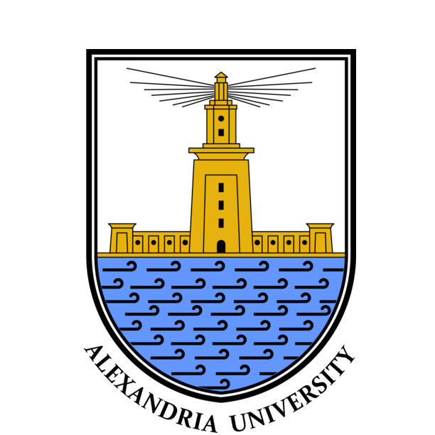
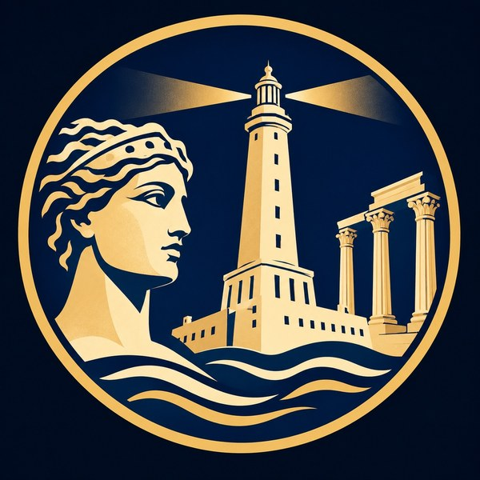

Alexandria University
- M.Sc. in Nuclear and Radiation Engineering
- Distinction, GPA 3.88/4.00
Expected 2027
My work focuses on nuclear safety, safeguards and security, with growing interest in radiation detection and AI for nuclear applications. I use simulation and data-driven tools, such as PCTRAN, HotSpot, GEANT4 and machine learning, to study how nuclear systems behave under normal and accident conditions.
Beyond research, I am passionate about the history of Alexandria, my home city, and how its long scientific tradition connects to modern nuclear science.

Expected 2027
July 2025
My research interests span reactor safety, nuclear safeguards and security, and radiation detection. I am interested in tools that help assess risk, understand accident consequences, and improve how radiation is measured and imaged.
This work combines simulation, Monte Carlo methods and, increasingly, machine learning.
As a research assistant at Alexandria University, I work on nuclear safety, safeguards and security, including PCTRAN simulations of postulated accident scenarios and their environmental impact.
My thesis work combines HotSpot with machine learning for an SMR-PWR case study at El Negila.
During my research internship at JINR in Dubna, I worked on a micro-SPECT system based on Timepix detectors, using coded-aperture collimation, iterative 3D reconstruction and GEANT4 Monte Carlo simulations.
My special studies thesis, Applications of AI in Nuclear Sectors, explored how AI is used across the nuclear sector. I continue this direction with Python machine-learning tools such as scikit-learn and TensorFlow.
JINR Interest Journal, December 2023.
JINR, Dubna, October 27, 2025.
Poster, 16th UGRF / 4th Egyptian Junior Researcher Competition, Nile University, August 2023.

Beyond my research, I am drawn to the history of Alexandria, the city where I study and live. Founded in 331 BC, it hosted the ancient Library and Museum, and today it is home to the Bibliotheca Alexandrina.
I see Alexandria's scientific heritage as part of the same story as modern nuclear science. My history page follows the city across nine eras, from its foundation to the present day.